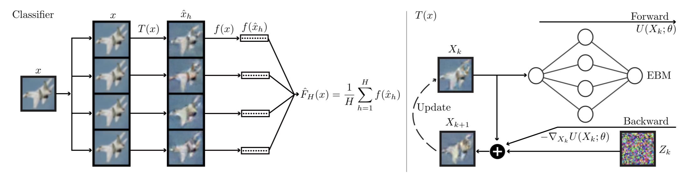
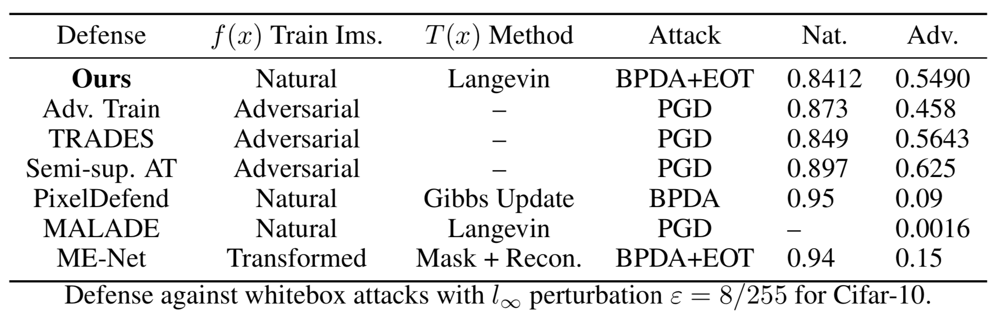
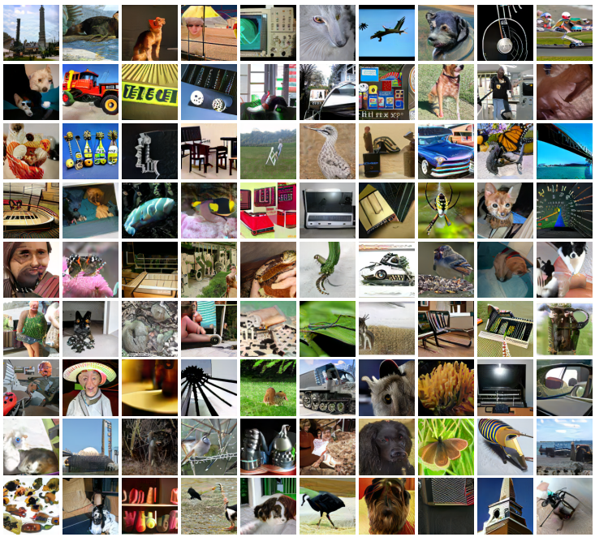

Research Highlights
Learning ConvNet Energy Functions of High-Dimensional Image Data
Mapping Macroscopic Structures of Non-Convex Energy Functions
The local modes of an energy function are stable states that appear with high probability.
An energy function defines a non-Euclidean geometry over the state space.
Geodesic distances along the energy manifold provide a measure of conceptual similarity between states.
Related groups of local modes form macroscopic non-convex structures that are analagous to folding funnels of protein potentials.
I use a novel MCMC algorithm to detect metastable structures of learned energy functions that correspond to intuitive image concepts, as explored here.
Defense Against Adversarial Attacks with ConvNet Energy Functions

Image classifier networks are highly susceptible to inperceptible perturbations that drastically alter network output.
These pertubations can cause a network to give non-sensical labels for images that are clearly recognizable to a human.
In contrast to existing approaches that modify classifier training to learn robust networks, this project
seeks to secure naturally-trained classifiers using only image transformation. Long-run MCMC sampling
with a convergent energy function preserves recognizable image features needed for classification while removing
adversarial signals that disrupt classifier performance. The resulting defense is the first to secure highly vulnerable
classifiers trained with natural images alone, providing the first viable and competitive alternative to adversarial training and related
robust training modifications.

High-Quality High-Resolution Unconditional Image Synthesis

Image synthesis has seen rapid progress in the past few years.
Many successful synthesis models that generate realistic samples are conditional models, meaning that supervised label information guides image appearance.
Unconditional image synthesis, which seeks to generate realistic and diverse images without any supervised information, remains a difficult task.
Investigations into EBM learning, especially MCMC initilization and incorporation of generator latent spaces, has led to a major breakthrough in EBM learning for complex unconditional datasets.
In particular, our new methods learn models that can achieve an FID score of 29.2 on unconditional ImageNet at 128x128 pixel resolution.
These results approach what is achievable by state-of-the-art generative models and vastly improve upon existing EBM results.
Preliminary results can be found here, and further results will be released in the near future.